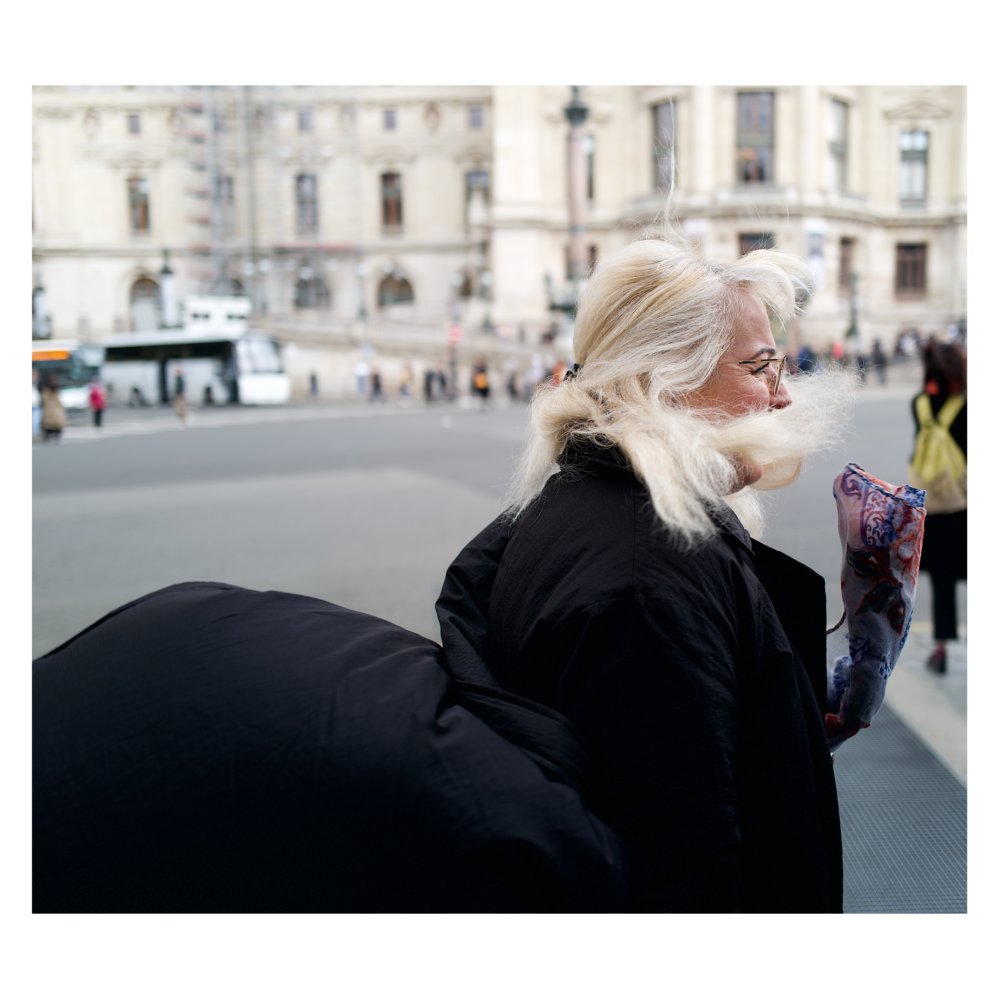

Снаружи — всё, чего хотели десять лет назад: компания, репутация, отпуск три раза в год, дети в хорошей школе, машина, на которую раньше засматривались в салоне. Внутри — тише, чем должно быть в этой точке. И мысль, которую сначала отгоняем, потом записываем в заметки, потом перечитываем в три часа ночи: жизнь идёт — а будто не моя.
Кто-то называет это кризисом среднего возраста. Кто-то — выгоранием.
Я называю — путь. И прошёл его не один раз.
Знаю — но не делаю
Всё ведь понятно — вот цель, вот шаги, вот человек, которого пора нанять, вот разговор, который пора провести. Понятно — третий месяц. Пятый. Год. А делаем то же, что и раньше — звоним тем же клиентам, читаем те же книги, обещаем себе понедельник. И каждый вечер — короткое такое противное чувство, которое мы научились называть «устал» и не называть никак больше.
Хочу проявляться — но страшно
Идея сидит давно — в заметках, в черновиках, в разговорах с женой за ужином, в голове по дороге в офис. Готовый запуск, готовый блог, готовое выступление — лежат и ждут. А наружу выходит — никогда. Страшно потерять то, что есть (а есть много). Страшно начать и оказаться обычным.
Достиг — но не чувствую
Галочки расставлены — дом, машина, бизнес, дети в хорошей школе, отпуск три раза в год, инстаграм, в который смотришь и узнаёшь себя только по фоткам. Картинка — как у тех, на кого мы смотрели в тридцать. Внутри — никак. Не плохо, не хорошо — просто никак. И главный вопрос, на который у нас давно нет ответа: ради чего всё это было, и куда дальше, если «дальше» уже как бы наступило.
На себя времени нет
На команду — есть. На детей — есть. На жену — стараемся, чтобы было. На родителей — обещаем, что в следующем месяце точно. На себя — потом. На других деньги уходят легко: подарки, билеты, рестораны, ремонт, школа, репетиторы. На себя — «да ладно, у меня же всё есть». У нас и правда всё есть. Кроме нас самих, кажется.
Цели мы и так умеем ставить, тут коуч не нужен. Я работаю с тем, что мешает делать то, что уже знаем — с тем, что в кабинете кризис-менеджмента и в спальне в три ночи звучит одним и тем же голосом.
Структура и фокус. Где мы на самом деле, чего на самом деле хотим, и почему до сих пор не сделали — без круговых разговоров и красивых формулировок, за которыми нет движения.
Работа с внутренними конфликтами — теми, из-за которых одна часть нас хочет, а другая упирается ногами в пол. Не «поверь в себя», не уговоры — а понимание, кто там внутри упирается и почему у него есть на это право.
Работа с частями: с той, что боится, с той, что защищает, с той, что молчит третий год. Не воевать с собой — договариваться. Внутри у нас сидит вполне взрослый совет директоров, пора пообщаться с ними.
Результат — не «заставить себя».
Результат — перестать мешать.
Начинаем с сессии-знакомства — посмотреть друг на друга и понять, есть ли смысл начинать. Если контакт — позову в долгую. Если нет — расходимся друзьями, без уговоров.
Одна сессия
30 000₽
Для тех, кто хочет попробовать формат и понять, есть ли в этом смысл для нас.
Пакет 7 сессий
210 000₽
Достаточно, чтобы первые сдвиги стали устойчивыми, а не вернулись через месяц к тем же проблемам.
Пакет 15 сессий
400 000₽
Глубокая работа — для тех, кто пришёл не примеряться, а двигаться.
Двадцать с лишним лет в бизнесе — и не одном, а нескольких: тех, что выходили на миллиард в год со штатом семьдесят человек, и тех, в которых я был и финдиректором, и CEO, и ткани на производство отвозил. Поднимал инвестиции на стартапы в США — и в те же годы был по уши в долгах. Женат двадцать с лишним лет, у нас три дочки.
Я не про «успешный успех» — я видел, как он выглядит изнутри, и могу рассказать, что внутри там бывает довольно тихо. Я про жизнь — разную, неровную, иногда смешную, чаще честную.
Прошёл свой кризис тридцати и свой кризис сорока — известная территория.
8 лет в спортивной гимнастике — три, четыре, пять тренировок в неделю, потому что тело знает то, чего голова уже забыла. 10 лет тантры, 5 лет личной терапии, годы медитаций — таких, о которых не пишут карусели в инстаграме.

Терапия идёт назад — к тому, откуда выросло. Коучинг идёт вперёд — к тому, что мы хотим сделать сейчас и почему не делаем. Я не лечу — помогаю двигаться. Но границы держу аккуратно: если в процессе вылезает то, что нужно проработать с психологом — скажу прямо.
Бывает. Коучинг — это контакт двух конкретных людей. Иногда не совпадает подход, иногда — химия, иногда — момент в жизни. Поэтому есть сессия-знакомство: посмотреть друг на друга и понять, есть ли смысл начинать. Если нет — спокойно расходимся, никого не уговариваю.
Первые сдвиги — обычно к третьей-четвёртой сессии. Устойчивые изменения — от трёх месяцев. Это не магия и не «восемь шагов к лучшей версии себя», а нормальная работа — последовательная, иногда скучная, иногда неудобная.
Самый частый запрос — «вроде всё есть, а чего хочу, не понимаю». Здесь и начинаем.
Да, после знакомства можно работать по одной — 30 000 ₽ за сессию.
Коучинг — про движение вперёд. Не про разбор прошлого, не про терапию, не про «просто поговорить». Если узнаёте себя ниже — скорее всего, нужен другой специалист, и это нормально.
Панические атаки, травмы, длительная тревога, «хочу вернуться в то состояние, которое было раньше». Здесь нужен психотерапевт — и обращение к нему будет лучшим, что можно для себя сделать.
Если ищете кого-то, кто будет мотивировать и контролировать. Я даю направление и инструменты — но делать всё равно вам. Между сессиями будут задания, и они требуют усилий.
«Не знаю, чего хочу» без готовности это выяснять. Можем начать с размытого — но нужна честная готовность копать.
Записывайтесь — поговорим. Расскажете, что не отпускает, с чем хотите поработать, что давно сидит занозой и никуда не делось. С меня — план действий и честная обратная связь, без «у вас огромный потенциал» и других вежливых формулировок. Если будет контакт — позову в долгую работу. Если нет — разойдёмся друзьями.